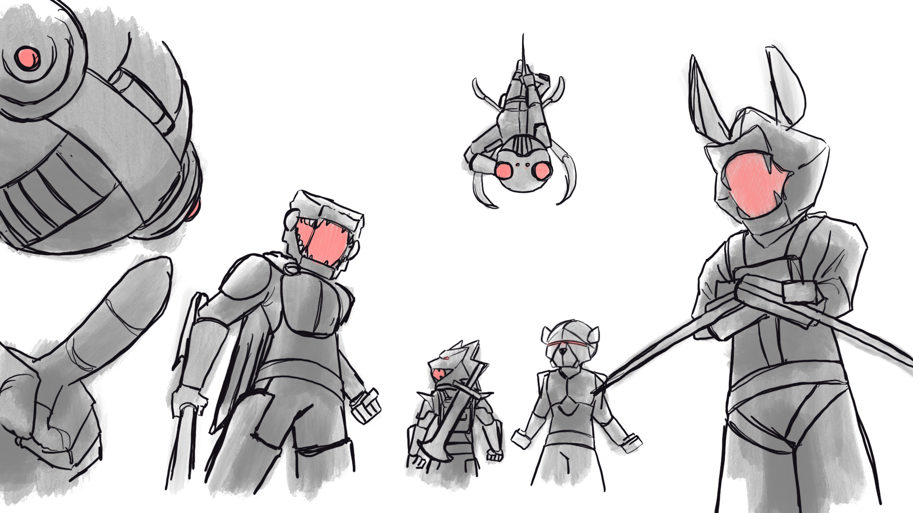
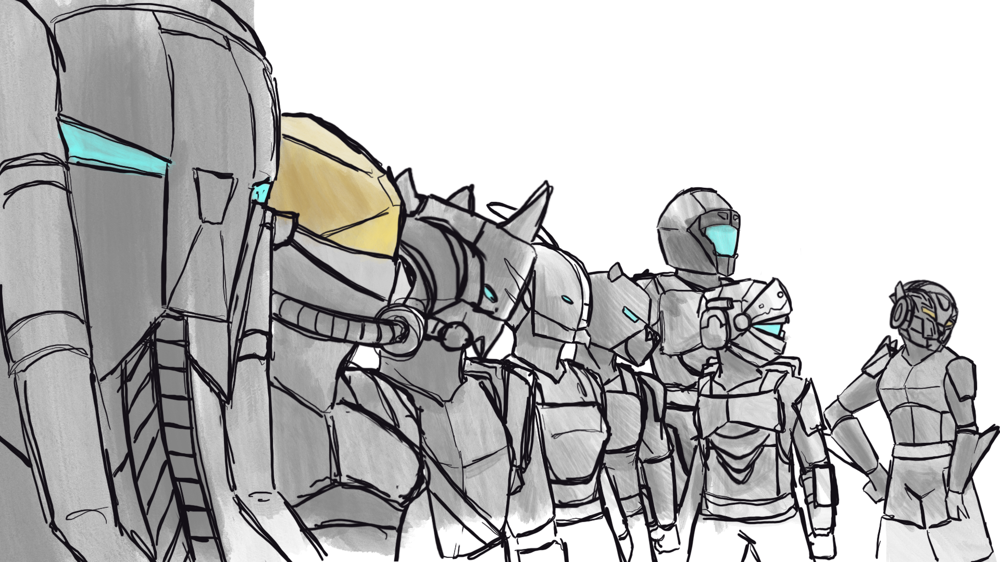
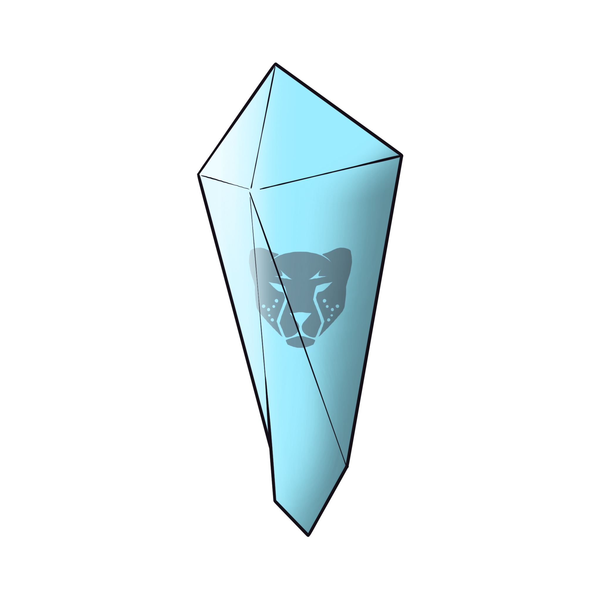

Story Foundation
Animalia is an animated series of super powered individuals with animal-like powers and assets fighting for the sake of good or evil. The inspiration, in design at least, comes from the likes of Titanfall, Wild Kratts, and Power Rangers.
"Power is never just strength. In Animalia, it is a test of what each character chooses to protect."

Core Themes
Animalia focuses on three timeless elements: identity, unity, and sacrifice. These themes explore character struggles with belonging, the power of teamwork, and the cost of protecting what they love.
"Every mission asks the same question: what are you willing to lose for your team?"

Worldbuilding
The crystals are powerful relics that awaken latent animal abilities in their users. They have shaped a world of heroes, villains, and factions fighting for control.
"Crystals do not choose heroes. They reveal who someone already is."